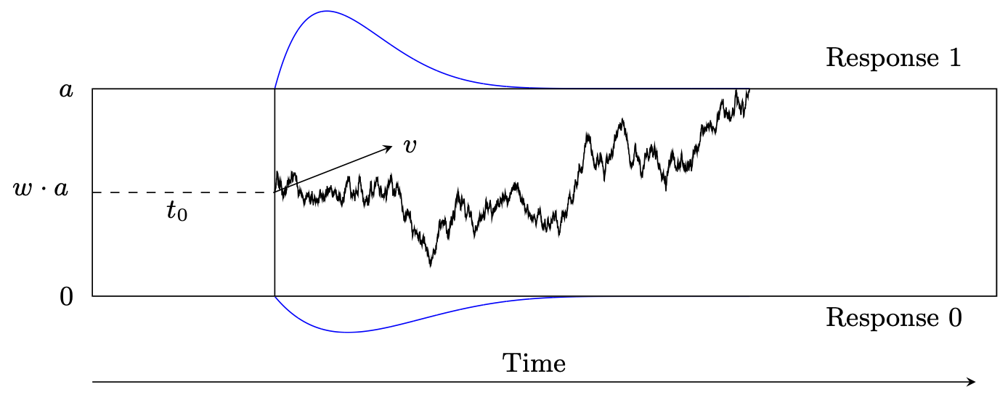

Wiener diffusion model
Diffusion models, sometimes also called Wiener diffusion models, are among the most frequently used model families in modeling two-alternative forced-choice tasks (see Wagenmakers (2009), for a review). Diffusion models allow to model response times and responses jointly. The basic version of a diffusion model comprises four parameters: the boundary separation, \(a\), the relative starting point, \(w\), the drift rate, \(v\), and the non-decision time, \(t0\) (Ratcliff 1978). In the basic model, it is assumed that the four basic parameters are the same for the whole experiment. As this assumption is very strict and there are examples that suggest that the basic parameters can be different from trial to trial, so called inter-trial variabilities were introduced and the basic four- parameter model was extended to a seven-parameter model. In the seven-parameter extension of the diffusion model there are the following three parameters added: the inter-trial variability in relative starting point, \(s_w\), the inter-trial variability in drift rate, \(s_v\), and the inter-trial variability in non-decision time, \(s_{t0}\) Nicenboim, Schad, and Vasishth (2025).
Data for the diffusion model is two-dimensional: There is one vector for the reaction times, \(y\), and one vector for the given responses, \(\text{resp}\). The reaction times shall be positive, continuous and in seconds, the responses shall be binary.
As a diffusion model describes the decision process for a decision with exactly two choices, there exist reaction time distributions for each response alternative. This means that the probability density function (\(p\)) splits into one part for one response alternative and one part for the other response alternative. In the following, we will refer to one alternative as the upper response boundary and to the other alternative as the lower response boundary. \(p\) of the lower response boundary can be obtained when inserting \(-v\) and \(1-w\) to \(p\) of the upper response boundary. Let’s call \(p\) for the lower response boundary \(p_0\) and \(p\) for the upper response boundary \(p_1\). Then:
\[ p_0(a,t0,v,w,sv,sw,st0) = p_1(a,t0,-v,1-w,sv,sw,st0) \]
Usually, a \(PDF\) integrates to 1. In the case of the diffusion model, only the sum of both parts, \(p_0\) and \(p_1\), integrates to 1. This is called defective.

In this model it is assumed that the decision process behaves like a random walk and we are interested in the first time that the random walk crosses one of the two decision boundaries. Hence, we are interested in the first-passage time of the decision process. The Stan function wiener_lpdf() returns the logarithm of the first-passage time density function for a diffusion model with up to seven parameters for upper boundary responses, \(\log(p_1)\). As can be seen above, it suffices to implement the density for only one response boundary, as the other can be obtained by mirroring the starting point and drift rate. Any combination of fixed and estimated parameters can be specified. In other words, with this implementation it is not only possible to estimate parameters of the fullseven- parameter model, but also to estimate restricted models such as the basic four- parameter model, or a five or six-parameter model, or even a one-parameter model when fixing the other six parameters.
For example, it is possible to permit variability in just one or two parameters and to fix the other variabilities to 0, or even to estimate a three-parameter model when fixing more parameters (e.g., fixing the relative starting point at 0.5).
It is assumed that the reaction time data that correspond to the upper response boundary \(y_\text{upper}\) is distributed according to wiener_lpdf():
\[
y_\text{lower} \sim \operatorname{wiener\_lpdf}(a, t0, w, v, s_v, s_w, s_{t0})
\] and the reaction time data that correspond to the lower response boundary \(y_\text{lower}\) is distributed according to wiener_lpdf() with mirrored starting point and drift rate:
\[ y_\text{upper} \sim \operatorname{wiener\_lpdf}(a, t0, 1-w, -v, s_v, s_w, s_{t0}) \]
Function call example
The following example demonstrates a diffusion model call in Stan:
data {
int <lower=0> N; // Number of trials
array[N] real rt; // response times (in seconds )
array[N] int <lower=0, upper=1> resp; // responses {0 ,1}
}
transformed data{
real min_rt = min(rt);
}
parameters {
real <lower=0> a; // boundary separation
real v; // drift
real <lower=0, upper=1> w; // relative starting point
real <lower=0, upper=min_rt> t0; // non-decision time
real <lower=0> sv; // variability in drift
// variability in starting point
real <lower=0, upper=fmin(2 * w, 2 * (1 - w))> sw;
real <lower=0> st0; // variability in non-decision time
}
transformed parameters{
real one_minus_w = 1 - w;
real neg_v = -v;
}
model {
// prior
a ~ normal(1, 1);
w ~ normal(0.5, 0.1);
v ~ normal(2, 3);
t0 ~ normal(0.435, 0.12);
sv ~ normal(1, 3);
st0 ~ normal(0.183, 0.09);
sw ~ beta(1, 3);
// likelihood (diffusion model)
for (i in 1:N) {
if (resp[i] == 1) {
// upper boundary
target += wiener_full_lpdf(rt[i] | a, t0, w, v,
sv, sw, st0);
} else {
// lower boundary: mirror drift and starting point
target += wiener_full_lpdf(rt[i] | a, t0, one_minus_w,
neg_v, sv, sw, st0);
}
}
}The data block
The data should consist of at least three variables:
- The number of trials N,
- the response, coded as 0 = “lower bound” and 1 = “upper bound”, and
- the reaction times in seconds (not milliseconds).
Note that two different ways of coding responses are commonly used: First, in response coding, the boundaries correspond to the two response alternatives. Second, in accuracy coding, the boundaries correspond to correct (upper bound) and wrong (lower bound) responses. This means, depending on the coding you choose, the bounds mentioned in the second variable above differ and the response variable will have a different form.
Most often, an experimenter wants to find out whether an experimental manipulation influences the model parameters. As there exists psychological interpretations for each diffusion model parameter, the experimenter can draw conclusions from differing parameters. Therefore, usually an own diffusion model is being computed for each experimental group to enable a comparison of the parameters between the groups. This can be manipulation between different subjects, like an experimental group and a control group (so called between-subject manipulations). However, this can also be manipulations within the same subject by presenting stimuli from different experimental groups (so called within-subject manipulations). Depending on the experimental design, one would typically also provide the number of conditions and the condition associated with each trial as a vector. Then, one model for each condition will be computed. This means that the parameters also have to be defined for each condition.
In a hierarchical setting, the data block would also specify the number of participants and the participant associated with each trial as a vector. It is also possible to hand over a precision value in the data block.
The parameters block
The model arguments of the wiener_lpdf() function that are not fixed to a certain value are defned as parameters in the parameters block. In this block, it is also possible to insert restrictions on the parameters. Note that the MCMC algorithm iteratively searches for the next parameter set. If the suggested sample falls outside the internally defined parameter ranges, the program will throw an error, which causes the algorithm to restart the current iteration. Since this slows down the sampling process, it is advisable to include the parameter ranges in the defnition of the parameters in the parameters block to improve the sampling process (see table below for the parameter ranges). In addition, the parameter space is further constrained by the following conditions:
- The non-decision time \(t_0\) has to be smaller or equal to the observed reaction time: \(t0 \leq y\).
- The varying relative starting point \(w\) has to be in the interval (0,1) and thus,
\[ \begin{aligned} &w + \frac{s_w}{2} < 1 \text{, and} \\ &0 < w-\frac{s_w}{2} \end{aligned} \]
| Parameter | Range | Parameter | Range | |
|---|---|---|---|---|
| \(a\) | (0, \(\infty\)) | \(y\) | (0, \(\infty\)) | |
| \(v\) | (-\(\infty\), \(\infty\)) | \(s_v\) | [0, \(\infty\)) | |
| \(w\) | (0,1) | \(s_w\) | [0,min(2w, 2(1-w))) | |
| \(t_0\) | [0,\(\infty\)) | \(s_{t0}\) | [0,\(\infty\)) |
The model block
In the model block, the priors and likelihood are defined for the upper and the lower response boundary. Different kinds of priors can be specifed here. Generally, the regularization induced by mildly informative priors can help both statistically and computationally.
In the second part of the model block, the data generating distribution is applied to all responses. The drift rate \(v\) and relative starting point \(w\) have to be mirrored for responses at the lower boundary.
For more details regarding the application of the diffusion model in Stan, see Henrich et al. (2024).
Truncated and censored data
Truncation and censoring frequently occur in psychological data collection. For reaction time data, truncated and censored data regularly arise in psychological studies as a consequence of using response windows or deadlines. These are sometimes introduced in the analysis of data to exclude reaction times that appear too short or too long, but they are also sometimes already built into the study procedures to push participants to respond within a specifc temporal window.
Depending on the implementation of the response window, two different types of data arise: truncated data or censored data. Since the effects of truncation or censoring on summary statistics such as mean, median, standard deviation, and skewness is regularly too large to ignore (Ulrich and Miller 1994), data analysts are well advised to account for these effects.
As described in the Truncated or Censored Data chapter, the cumulative distribution function (\(F\)) and its complement (\(\text{CCDF}\)) are needed to model truncated and censored data.
As explained above, \(p\) is defined defectively, meaning that only the sum of \(p\)s for both response alternatives integrates to 1. For the same reason, \(F\) and \(\text{CCDF}\) are also implemented defectively. Analogously, only the sum of the \(F\)s and \(\text{CCDF}\)s for both response alternatives asymptotes above at 1.
In the case of the diffusion model, \(F\) asymptotes above at the probability \(PROB\) to hit the corresponding response boundary: (for simplicity, we omit the inter-trial variabilities in the following)
\[ \begin{aligned} F_1(\infty\mid a,w,v) &= \text{PROB}(a,w,v) \text{ and} \\ F_0(\infty\mid a,w,v) &= F_1(\infty\mid a,1-w,-v) = \text{PROB}(a,1-w,-v) \end{aligned} \]
Modeling truncated data with the diffusion model
Data are called truncated when there is no information available for analysis from trials with values larger (or smaller) than a right (or left) reaction-time bound. In reaction time experiments, reaction time data are truncated if trials with reaction times outside the response window are excluded from the analysis. Not even a count of those omitted trials is kept.
Let \(L\) denote the left reaction-time bound and \(U\) denote the right reaction-time bound of a response window.
Then, the density of truncated data for both response boundaries 0 and 1, here denoted as \(\text{resp}\in\{0,1\}\), can be formulated as follows:
\[ \begin{aligned} &p_{\text{resp}}(y \mid L<X\leq U, a, w, v) = \\ &\frac{p_{\text{resp}}(y \mid a, w, v)\cdot \mathbb{I}_{\{L<y\leq U\}}} {\bigl(F_0(U \mid a, w, v)+F_1(U \mid a, w, v)\bigr) - \bigl(F_0(L\mid a, w, v)+F_1(L\mid a, w, v)\bigr)} \end{aligned} \]
The density of left truncated data can be formulated as follows. \[ \begin{aligned} p_{\text{resp}}(y \mid L<X, a, w, v) = \frac{p_{\text{resp}}(y \mid a, w, v)\cdot \mathbb{I}_{\{L<y\}}} {1-\bigl(F_0(L \mid a, w, v)+F_1(L \mid a, w, v)\bigr)}, \end{aligned} \]
The density of right truncated data can be formulated as follows.
\[ \begin{aligned} p_{\text{resp}}(y \mid X\leq U, a, w, v) = \frac{p_{\text{resp}}(y \mid a, w, v)\cdot \mathbb{I}_{\{y\leq U\}}}{F_0(U \mid a, w, v)+F_1(U \mid a, w, v)} \end{aligned} \]
As the functions are implemented defectively, a truncated diffusion model cannot be calculated with the truncation functor \(T[,]\) as it would usually be done in Stan. This means the function call: y ~ wiener(...)T[L,U] does not work the way it is supposed to. When the truncation functor is called in Stan, Stan searches for a CDF implementation internally. In the case of the diffusion model, Stan would find the CDF, but is not aware of its defective implementation and calculates the computations as if it were a non-defective CDF. This causes misleading and incorrect results.
To implement the truncated model, write out the function shown above on the log-scale with left_bound = L and right_bound = U, where wiener_lcdf_unnorm() calls the logarithmized CDF of the diffusion model at the response-1-boundary:
model {
real log_denom = log_diff_exp(
log_sum_exp(
wiener_lcdf_unnorm(right_bound | a, t0, w, v, sv, sw, st),
wiener_lcdf_unnorm(right_bound | a, t0, one_minus_w, neg_v,
sv, sw, st)),
log_sum_exp(
wiener_lcdf_unnorm(left_bound | a, t0, w, v, sv, sw, st),
wiener_lcdf_unnorm(left_bound | a, t0, one_minus_w, neg_v,
sv, sw, st)));
// likelihood
for (i in 1:N) {
if (resp[i] == 1) {
// response -1 boundary
target += wiener_lpdf (rt[i] | a, t0, w, v, sv, sw, st);
} else {
// response -0 boundary ( mirror v and w)
target += wiener_lpdf (rt[i] | a, t0, one_minus_w, neg_v,
sv, sw, st);
}
} // end for
target += -N * log_denom;
}For details of how to call a truncated model within the parallelization routine of reduce_sum or with truncation to only on side, see Henrich and Klauer (2026).
Modeling censored data with the diffusion model
Data are censored when observations that are above or below a right or left boundary value are reported as occurrences of the event \((y > U)\), for \(U\) the right bound, or as occurrences of the event \((y \leq L)\), for \(L\) the left bound, respectively. Like for truncated data, the range of the possible values is restricted, but the number of observations that fall outside the boundaries is kept, whereas in truncation, no count would be kept.
For the censored model, we distinguish two cases. In the first case, the responses of the censored trials are known, but the reaction times are not known. In the second case, neither the responses nor the reaction times of the censored trials are known. Note that the second case differs from a truncated model in the fact that the number of censored trials is still known. Consider first the case where the response is known even for censored data.
To model such data in Stan, the left and right reaction time bounds, left_bound and right_bound, respectively, are handed over in the data block, as well as a vector censored that tracks whether a trial is censored (= 1) or not (= 0), and counts of trials censored at the left reaction time bound and counts of trials censored at the right reaction time bound for each response in {0,1}. There are four such count variables: N_cens_left_0, N_cens_left_1, N_cens_right_0, N_cens_right_1:
model {
for (i in 1:N) {
if (censored[i] == 0) {
if (resp[i] == 1) {
y[i] ~ wiener(a, t0, w, v, sv, sw, st0);
} else if (resp[i] == 0) {
y[i] ~ wiener(a, t0, one_minus_w, neg_v, sv, sw, st0);
}
}
}
// likelihood (response = 0)
target += N_cens_left_0
* wiener_lcdf_unnorm(left_bound | a, t0, one_minus_w, neg_v,
sv, sw, st0);
target += N_cens_right_0
* wiener_lccdf_unnorm(right_bound | a, t0, one_minus_w, neg_v,
sv, sw, st0);
// likelihood (response = 1)
target += N_cens_left_1
* wiener_lcdf_unnorm(left_bound | a, t0, w, v, sv, sw, st0);
target += N_cens_right_1
* wiener_lccdf_unnorm(right_bound | a, t0, w, v, sv, sw, st0);
}When data are censored at only one side, meaning that the reaction time constraint only exists for one of the two boundaries, omit the lines for the other side in the code. A both sided reaction time window would be, for example, when only reaction times are accepted that occur between 0.2 and 0.8 seconds. A one sided reaction time constraint would be, for example, when all reaction times below 0.8 seconds are accepted.
When data consist of many conditions (as explained in the beginning), it is sometimes more convenient to loop over all trials instead of using count variables as described above, using the following notation and code. A vector containing the information whether a trial is censored or not, here censored, needs to be handed over in the data block. This vector splits the data into three bins: all trials \(i\) withcensored[i]=0 are censored below the left reaction time bound, all trials \(i\) with censored[i]=1 fall between the reaction time bounds, and all trials \(i\) with censored[i]=2 are censored above the right reaction time bound. For non-censored trials, the log-PDF is computed, for left censored trials, the log-CDF is computed, and for right censored trials, the log-CCDF is computed:
model {
for (i in 1:N) {
// right censored at right_bound
if (resp [i] == 1) {
// upper response boundary
if (censored[i] == 0) {
target += wiener_lcdf_unnorm(left_bound | a, t0, w, v,
sv, sw, st0);
} else if (censored[i] == 1) {
target += wiener_lpdf(y[i] | a, t0, w, v, sv, sw, st0);
} else if (censored[i] == 2) {
target += wiener_lccdf_unnorm(right_bound | a, t0, w, v,
sv, sw, st0);
}
} else {
// lower response boundary (mirror drift and // starting point!)
if (censored[i] == 0) {
target += wiener_lcdf_unnorm(left_bound | a, t0, one_minus_w,
neg_v, sv, sw, st0);
} else if (censored[i] == 1) {
target += wiener_lpdf(y[i] | a, t0, one_minus_w, neg_v,
sv, sw, st0);
} else if (censored[i] == 2) {
target += wiener_lccdf_unnorm(right_bound | a, t0, one_minus_w,
neg_v, sv, sw, st0);
}
}
}
}When the data are censored on only one side, omit the case that is not needed.
Note that this block can be inserted in the defnition of the parallelization function, partial_sum_wiener(), as defined below.
Sometimes also the response is missing (i.e., it is known that the reaction time in a trial fell outside the response window, but which response was given is unknown). One method that has been used to model such data has involved inferring the numbers of missing responses of either kind from the observed relative frequencies of the two responses. This approach has the problem that quite specifc assumptions on the missing data have to be made (namely, that the proportions of the two kinds of responses are the same for responses within and outside the response window).
The following is a more principled approach that uses the cumulative distribution functions and their complements to provide the data-generating distribution of censored data. As before, let \(L\) be the left reaction time bound, and \(U\) the right reaction time bound, and consider decision times without inter-trial variabilities for the sake of simplicity. It follows that the likelihood contribution \(\textit{lik}_l\) for a left-censored data point is given by
\[ \begin{aligned} \textit{lik}_l(a,w,v) = F_0(L\mid a,w,v) + F_1(L\mid a,w,v), \end{aligned} \]
whereas the likelihood contribution \(lik_r\) due to a right-censored data point is given by
\[ \begin{aligned} \textit{lik}_r(a,w,v) = \text{CCDF}_0(U\mid a,w,v) + \text{CCDF}_1(U\mid a,w,v). \end{aligned} \]
See the following code for an example of Stan code implementing this second case of censoring. This model call deals with the problem of unknown responses by computing the probability of choosing the response-1 or response-0 boundary outside the response window. Here, the CDF and/or the CCDF are required, depending upon whether there is only left-censoring, right-censoring, or censoring both to the left and to the right. The following code shows the functions block for a model that is right-censored using the function partial_sum_wiener() to parallelize the execution of a single Stan chain across multiple cores:
functions {
real partial_sum_wiener(array[] real rt_slice, int start,
int end, real a, real t0, real w,
real v, real sv, real sw, real st,
array[] int resp, real right_bound,
array[] int censored) {
real ans = 0;
for (i in start:end) {
if (censored[i] == 1) {
// not censored
if (resp[i] == 1) {
// upper boundary
ans += wiener_lpdf(rt_slice[i+1- start ] | a, t0, w, v,
sv, sw, st);
} else {
// lower boundary(mirror v and w)
ans += wiener_lpdf(rt_slice[i+1- start ] | a, t0, one_minus_w,
neg_v, sv, sw, st);
}
} else {
// censored
ans += log_sum_exp (
wiener_lccdf_unnorm(right_bound | a, t0, w, v, sv, sw, st),
wiener_lccdf_unnorm(right_bound | a, t0, one_minus_w,
neg_v, sv, sw, st);
}
}
return ans;
}
}Combine this block with the model block in the example above by using the function reduce_sum().
target += reduce_sum(partial_sum_wiener, rt, 1,
a, t0, w, v, sv, sw, st, resp, right_bound, censored);
}For more details, see Henrich and Klauer (2026).